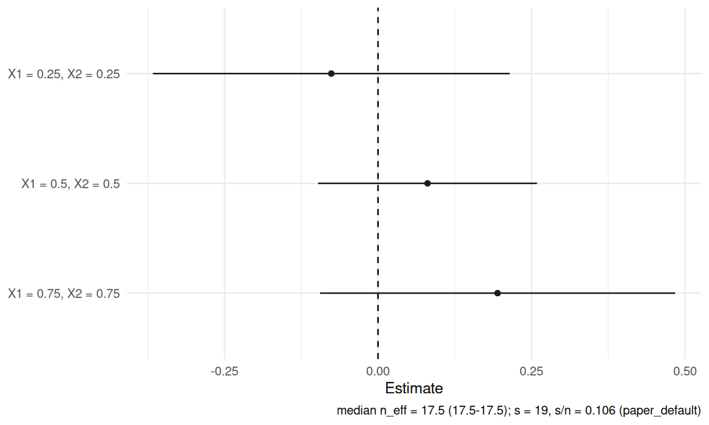

RdistNN estimates conditional treatment effects and regression functions using distributional nearest-neighbor (DNN) weights. Fit at selected covariate profiles, report pointwise estimates and delete-one jackknife standard errors, and inspect localization, overlap and sensitivity to tuning choices.
CATE, nonparametric regression and conditional LATE (CLATE) are supported workflows, with shared reporting and plotting interfaces. You supply nuisance predictions for the causal estimators; RdistNN constructs the adjusted signals and performs the local estimation and inference calculations.
Get started · Function reference · CLATE guide · Report an issue
These instructions describe development version 0.1.0.9003, maintained on the local development branch until reviewed publication. The GitHub install below uses the published master snapshot; install a local checkout to use changes that have not yet been published.
The latest update strengthens tests for saved-fit reuse, candidate uncertainty and package installation. Estimator interfaces and pointwise inference limits are unchanged. See the development notes for details.
Use the common result methods to report estimates, inspect stored tuning candidates and predict from saved fits. The Stata companion provides the same core estimation workflows; its crosswalk records shared capabilities and R-only interfaces.
Installation
Install the published GitHub snapshot:
install.packages("pak") # once
pak::pak("JakobJuergens/RdistNN")From a local source checkout, use pak::local_install("."). Check the installed version with packageVersion("RdistNN").
R 4.1.0 or newer, Rcpp and a C++17 toolchain are required. Use Rtools matching your R version on Windows, Xcode command line tools on macOS, or an R-compatible C++ compiler on Linux. OpenMP is optional; supported kernels run serially when it is unavailable. Install ggplot2 for plots and patchwork for composed dashboards:
install.packages(c("ggplot2", "patchwork")) # optionalFor the tagged release, use pak::pak("JakobJuergens/RdistNN@v0.1.0"). Release 0.1.0 contains the original CATE and regression workflows; it does not include the recent CLATE functionality. Its release assets include a source package with built HTML vignettes and checksums. The online documentation describes the development version.
Choose a workflow
| Goal | Entry point | Inputs and scope |
|---|---|---|
| Conditional average treatment effects | cate_dnn() |
Outcome, binary treatment and supplied outcome/propensity predictions, or a supplied pseudo-outcome |
| Conditional mean regression | np_dnn() |
Outcome and covariates; no nuisance predictions needed |
| Conditional effects among compliers | clate_dnn() |
Binary instrument and treatment, outcome, and five supplied nuisance predictions |
| A ratio of two local conditional means | affine_ratio_dnn() |
Two aligned signals, with paired covariance |
| Two-scale regression | np_tdnn() |
Signed combination of two DNN scales; additional smoothness conditions |
| Inspect or reuse DNN weights | weights_matrix() |
Covariates and single/batch targets; reusable weights and optional rank/distance extras |
The estimators accept numeric matrices/vectors or a data frame (including a tibble) with explicit column selectors. Use x0 for one reporting profile or X0 for a matrix of profiles. CATE and CLATE support single-scale method = "exact" (default) and method = "asymp" DNN weights. Two-scale TDNN is available for nonparametric regression only. Shared localization choices include L1, L2, scaled L1/L2 and Mahalanobis distance; fitted geometry stays fixed in fast rank deletions and saved-fit prediction. Legacy NP, TDNN and CATE jackknife = "loo" refits sample-dependent geometry on each deletion; its uncertainty can differ from the frozen-metric fast calculation.
Conditional average treatment effects
This example uses simulated data and oracle nuisance values to illustrate the interface. In an application, replace the oracle columns with aligned predictions of the two conditional outcome means and treatment propensity. The estimator does not fit these nuisance models.
library(RdistNN)
demo <- cate_demo_data(n = 180, p = 2, design = "hetero", seed = 1)
d <- demo$data
d$m1_oracle <- d$m0_oracle + d$tau_oracle
fit_cate <- cate_dnn(
data = d, x_cols = c("X1", "X2"),
y_col = "Y", t_col = "D",
m0_col = "m0_oracle", m1_col = "m1_oracle", e_col = "e_oracle",
x0 = c(0, 0), k = 1L, se = TRUE,
return = c("W", "dx", "psi", "nuisance")
)
summary(fit_cate)$coefficients
#> estimate std.error statistic p.value conf.low conf.high
#> target_1 0.4527139 0.2606611 1.736791 0.0824241 -0.05817257 0.9636003
confint(fit_cate)
#> conf.low conf.high
#> target_1 -0.05817257 0.9636003
predict(fit_cate, x0 = c(0.2, -0.1), interval = "confidence")
#> fit lwr upr
#> [1,] 0.7890503 0.4451826 1.132918The matrix interface also accepts a previously constructed pseudo-outcome: cate_dnn(X = X, x0 = x0, pseudo_outcome = psi). The getting-started guide shows both input formats and how to inspect local treatment overlap.
Nonparametric regression
demo_np <- np_demo_data(n = 180, p = 2, design = "sinusoidal", seed = 2)
fit_np <- np_dnn(
data = demo_np$data, x_cols = c("X1", "X2"), y_col = "Y",
x0 = c(0, 0), k = 1L, se = TRUE, return = c("W", "dx", "ess")
)
summary(fit_np)$coefficients
#> estimate std.error statistic p.value conf.low conf.high
#> target_1 0.03318309 0.1328814 0.2497195 0.8028043 -0.2272597 0.2936259
confint(fit_np)
#> conf.low conf.high
#> target_1 -0.2272597 0.2936259
predict(fit_np, x0 = c(0.2, -0.1), interval = "confidence")
#> fit lwr upr
#> [1,] 0.3350931 0.1612576 0.5089286
as.data.frame(diagnostics(fit_np))[, c("target_id", "n_eff", "weighted_mean_y")]
#> target_id n_eff weighted_mean_y
#> target_1 target_1 17.52493 0.03318309For matrices, use np_dnn(X = X, x0 = x0, Y = y). Regression results expose mu and se directly, with summary(), coef(), confint() and predict() as in the CATE workflow. NP/TDNN additionally provide vcov(); CATE currently reports marginal SEs without a vcov() method. Joint NP covariance uses common deletions across targets; saved-fit prediction retains training outcomes and geometry. See ?np_result for the result methods. The common diagnostics and plotting calls remain available. Two-scale regression uses np_tdnn() with explicit s1 < s2 (s2 < n for jackknife standard errors). See ?np_tdnn for its signed weights and additional assumptions, and plot_tdnn_scales() to compare component scales.
Conditional LATE
With a binary instrument and binary treatment, clate_dnn() estimates the conditional effect among compliers under the IV assumptions. Supply the instrument propensity and the conditional means of the outcome and treatment in each instrument arm. Predictions may use more adjustment covariates than the reporting coordinates selected by x_cols.
This simulated example again uses explicitly labelled oracle predictions.
demo_iv <- clate_demo_data(n = 180, seed = 3, heterogeneous = TRUE)
iv <- demo_iv$data
targets <- rbind(c(.25, .25), c(.5, .5), c(.75, .75))
fit_clate <- clate_dnn(
data = iv, x_cols = c("X1", "X2"), X0 = targets,
y_col = "Y", d_col = "D", a_col = "A", e_col = "e_oracle",
m_y0_col = "m_y0_oracle", m_y1_col = "m_y1_oracle",
m_d0_col = "m_d0_oracle", m_d1_col = "m_d1_oracle",
k = 1L, training = "oracle", return = c("W", "dx", "nuisance")
)
summary(fit_clate)$coefficients
#> estimate std.error statistic p.value conf.low conf.high
#> target_1 -0.07602259 0.14836404 -0.5124058 0.6083671 -0.36681077 0.2147656
#> target_2 0.08073146 0.09096502 0.8875000 0.3748098 -0.09755671 0.2590196
#> target_3 0.19480142 0.14759758 1.3198144 0.1868970 -0.09448453 0.4840874
summary(fit_clate)$components # adjusted reduced form and first stage
#> target_id numerator denominator numerator_se denominator_se neff
#> 1 1 -0.03134205 0.4122729 0.07177081 0.2303445 17.52493
#> 2 2 0.05315069 0.6583641 0.05800726 0.1838949 17.52493
#> 3 3 0.09823286 0.5042718 0.06347159 0.2162997 17.52493Both component means use the same DNN weights. The ratio’s uncertainty retains their paired covariance, holding the supplied signals fixed. affine_ratio_dnn() accepts the signals directly; iv_augmented_signals() constructs them from predictions. The CLATE guide covers input alignment, diagnostics and reporting. The inference guide explains denominator status and the experimental ratio_confidence_set() helper, including unbounded sets. Inspect the first stage alongside the ratio; ordinary Wald intervals can be misleading when the first stage is weak.
Shared reporting and plots
CATE, CLATE and regression use the same calls, with the fitted object’s class selecting the appropriate implementation:
summary(fit)$coefficients
coef(fit)
confint(fit)
predict(fit, X0 = new_profiles, interval = "confidence")
diagnostics(fit)Their coefficient tables contain estimate, std.error, statistic, p.value, conf.low and conf.high. CLATE also reports component and computation-status tables. Prediction changes the reporting profiles while retaining the supplied observations and signals; it does not retrain learners.
With ggplot2 installed, use the same plotting functions for either fit:
plot_estimates(fit_clate, style = "forest")
| Call | What it shows |
|---|---|
plot(fit) or plot_estimates(fit)
|
Estimates and pointwise confidence bounds; profile, forest or pointrange styles |
plot_weights(fit) |
Localization and weight concentration |
plot_overlap(fit) |
Treatment overlap for CATE; instrument overlap for CLATE |
plot_influence(fit) |
CATE score contributions or CLATE paired-score residual contributions |
plot_tuning(fit) |
Sensitivity across stored tuning candidates |
plot_dashboard(fit) |
A combined view; uses patchwork when installed, otherwise returns a named list of panels |
Retain return = c("W", "dx", "nuisance") for weight, distance and overlap views. plot_data_estimates(), plot_data_weights() and plot_data_diagnostics() expose data for your own plots. See the visualization guide and the CLATE guide for method-specific panels.
A CATE profile holds other covariates fixed and evaluates a sequence of reporting targets. This example uses oracle nuisances and holds X2 at zero.
set.seed(42)
n <- 1000
X <- cbind(X1 = runif(n, -2, 2), X2 = rnorm(n))
e <- plogis(0.4 * X[, "X1"])
tau <- 1 + sin(X[, "X1"])
m0 <- X[, "X1"] - 0.5 * X[, "X2"]
treat <- as.integer(runif(n) < e)
Y <- m0 + treat * tau + rnorm(n, sd = 0.5)
profile_data <- data.frame(X, T = treat, Y = Y, e = e, m0 = m0, m1 = m0 + tau)
X0 <- cbind(X1 = seq(-1.8, 1.8, length.out = 21), X2 = 0)
profile_fit <- cate_dnn(
data = profile_data, x_cols = c("X1", "X2"), y_col = "Y", t_col = "T",
e_col = "e", m0_col = "m0", m1_col = "m1",
X0 = X0, k = 1L, se = TRUE, jackknife = "fast"
)
plot(profile_fit)
Localization and tuning
With k = 1 and no explicit s, the default is s = floor(0.4 * n^((p + 1)/(p + 2))). Here s is the subsample order: increasing it concentrates weights closer to the target. Exact DNN weights average over size-s subsamples, using the full rank permutation, with support through rank n - s + k. The optional neighbors extra reports the first k neighbors, rather than the full weight support.
Supply s directly, use tuning = tuning_dnn_paper(), or set tuning_mode = "grid" to compare the paper-default sensitivity grid lambda = c(0.3, 0.4, 0.5, 0.75). The grid retains the default fit and candidate results. candidate_fit() and candidate_fits() expose candidate views for reporting, diagnostics and plots. This is sensitivity analysis; it does not automatically select a tuning value or justify inference after selection. See the tuning guide.
Delete-one standard errors require s < n. jackknife = "fast" uses cached ranks; "loo" provides the estimator-specific leave-one-out calculation. Set se = FALSE to skip uncertainty calculations. The manuscript’s DNN derivations use exact weights and k = 1; larger fixed k values and asymptotic weights are computational options requiring their corresponding statistical conditions.
Interpreting inference
Reported intervals are pointwise, not simultaneous confidence bands. AIPW CATE and augmented CLATE signals have Neyman orthogonality at the true nuisances. The normalized Robinson CATE signal generally has first-order propensity drift and needs additional propensity control. For orthogonal routes, valid full-sample nuisance reuse additionally needs learner accuracy and deletion stability, together with design, overlap and localization-bias conditions. Supplying oracle, out-of-fold or full-sample predictions does not itself establish the conditions appropriate to that training procedure.
For nuisance-based CATE and CLATE scores, supplied propensities must be finite and lie in [0, 1]; they are clipped to [clip, 1 - clip], with clip = 1e-8 by default. Supplied pseudo-outcomes are used unchanged. Clipping does not establish overlap. Weight ESS and overlap diagnostics describe local support; they do not certify inference assumptions.
CLATE’s causal interpretation additionally requires consistency, exclusion, conditional instrument independence, monotonicity and positive local compliance. It generally differs from population CATE. See the conditional Z-estimation guide and the CLATE articles for the theoretical scope and limitations.
Numerical behavior and engines
The R and Stata implementations share stable close-order TDNN coefficients, Beta interval masses that preserve represented tail weights, and recovery of finite L2 norms when intermediate squares overflow or underflow. Ordinary distance arithmetic retains deterministic ranks and original-row tie breaking. Mahalanobis geometry uses a cached SVD of the centered training design and then the same L2 norm engines. Shared covariance helpers recover representable extreme variances without forming overflowing raw sums. A nonzero variance outside the numeric range gives a rescaling error; paired ratios retain their per-target numerical-failure status. See Mahalanobis distance for the explicit rank cutoff and compatibility with older saved fits. Compensated sums protect weighted means and rank-weight normalization. Deletion calculations retain corrections through the final prefix/suffix combination, using shared arithmetic across estimator and prediction paths.
Compiled C++ kernels accelerate distances, weighted sums and frozen-score jackknife calculations. R fallbacks implement the same numerical contracts; use options(RdistNN.use_compiled = FALSE) for reference-path comparisons. Source installation still requires the compiler described above. Engine tests check discrete decisions exactly and continuous results at justified tolerances. See the compiled-code policy for the arithmetic and reproducibility contract.
Further documentation
- Notation and conventions explains arguments and returned quantities.
- Diagnostics and reporting covers local support and uncertainty summaries.
-
Affine paper replication documents the study-specific simulations, SIPP application and saved manuscript evidence. Locate the installed bundle with
system.file("paper-replication/affine", package = "RdistNN"). - The reference also includes experimental PLQR moment evaluation at supplied coefficients (without root solving), experimental local IV-GMM, simulation tools and extension interfaces.
If you installed the package with local vignettes, open the notation guide with vignette("notation-and-conventions", package = "RdistNN").
The package accompanies Orthogonal Inference for Conditional Z-Estimation without Cross-Fitting. Use citation("RdistNN") for citation information.
Help and contributions
Report problems or ask usage questions through the issue tracker, including a minimal reproducible example and sessionInfo(). Contributions are welcome; CONTRIBUTING.md links development procedures and the maintained interface and numerical contracts. RdistNN is licensed under GPL version 3 or later.